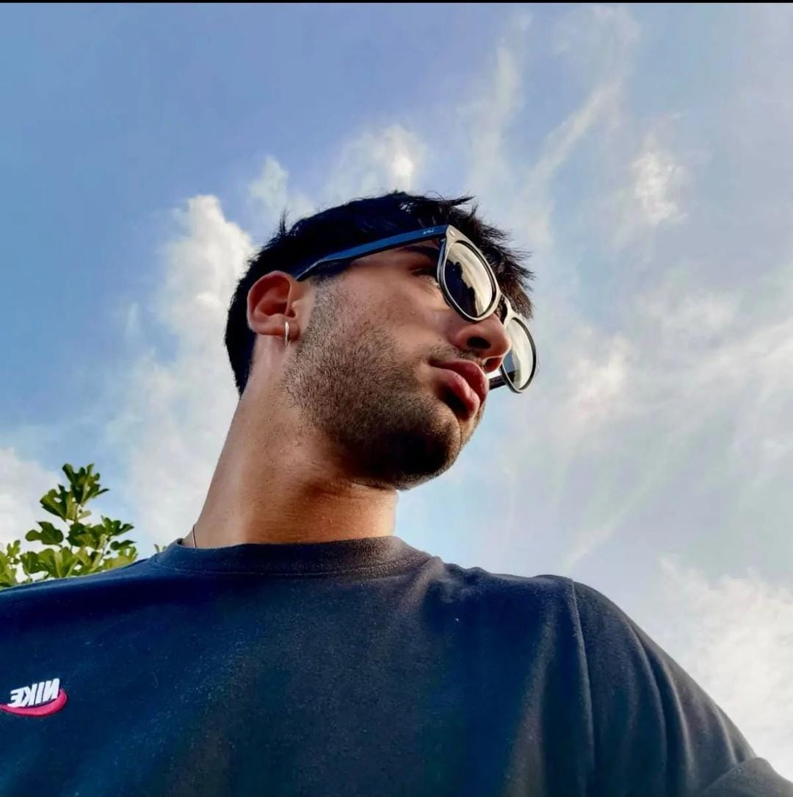

Sono giovane e ho una grandissima voglia di imparare in questo settore. È il momento
per me di uscire dalla mia zona comfort e dedicarmi veramente a qualcosa che mi piace. Sono pronto a
dare il massimo per raggiungere i miei obbiettivi.

San Miniato,PI 12/11/2000
Via Tosco Romagnola ovest n.99
denisdefra00@gmail.com
(+39) 346 745 7019
Addetto produzione presso Lapi Gelatine da 16/10/2022 (in corso)
Mi occupo di gestire la catena produttiva della gelatina, preoccupandomi che siano rispettate tutte le fasi essenziali per la preparazione
Selezionatore di carne presso Salumificio Rosi da 01/10/2020 a 05/10/2022
Mi occupavo di selezionare le carni più adatte ad ogni cliente preoccupandomi che fossero opportune per le loro lavorazioni